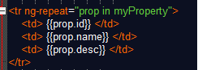
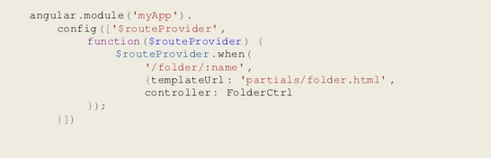
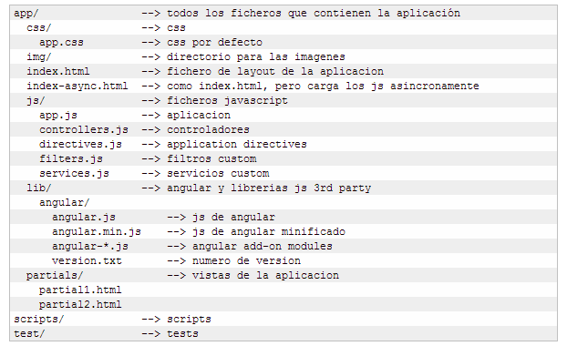

Angular es construido y sostenido por ingenieros de Google, es la forma en que Google piensa que las aplicaciones del lado del cliente deben estar desarrolladas
Sigue el patrón MV*, Data Binding, Dependency Injection, el HTML es el template, Self tested.
Controller
Es una funcion de Javascript
Contiene datos
Especifica un comportamiento
Debe contener unicamente la lógica de negocio necesitada por un vista
function myController(scope) {
$scope.someProperty = {};
}
Scope
Un objeto que hace referencia al modelo.
Un contexto para ejecutar expresiones como {{myProperty}}
Una estructura jerarquica
Tienen la capacidad de evaluar expresiones y propagar eventos
Template
Para Angular, el HTML funciona como template.

Routing
Rutas que cargan vistas (HTML - Templates) dinámicamente.

Directives
Es la forma en que "se le enseña al HTML nuevos trucos"
Angular posee Directivas ya construidas, pero pueden ser extendidas.
Cuando se escribe una directiva nueva, simplemente se le están entregando nuevas instrucciones al compilador.
Estructura Real
https://github.com/angular/angular-seed
Sugerencia de la típica solución escrita con AngularJS.

Información, Tutoriales y Directivas
http://angularjs.org/
Comunidad oficial de AngularJS.